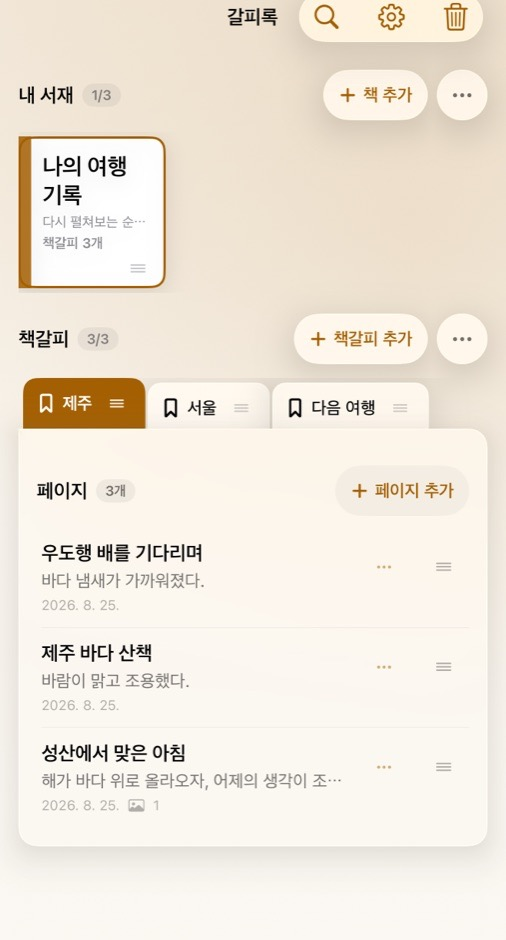
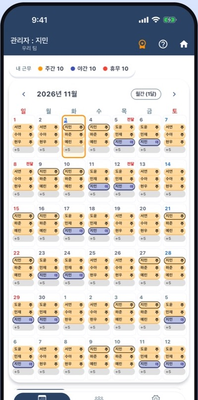

갈피록
iOS · Android 출시책과 책갈피로 나만의 기록을 정리하는 메모 앱입니다. 사진을 붙이고 페이지를 잠글 수 있으며, 회원가입이나 광고 없이 기록은 기기 안에만 보관됩니다.
지원 언어한국어English일본어·번체 중국어는 업데이트로 지원 예정

하나씩 순서대로 다듬어서 내보내고 있습니다.
책과 책갈피로 나만의 기록을 정리하는 메모 앱입니다. 사진을 붙이고 페이지를 잠글 수 있으며, 회원가입이나 광고 없이 기록은 기기 안에만 보관됩니다.
지원 언어한국어English일본어·번체 중국어는 업데이트로 지원 예정

교대 근무·알바 팀의 근무표를 한 달 달력에 색으로 보여 주는 앱입니다. 초대 코드 하나로 팀을 만들면 관리자가 짠 근무표가 팀원에게 바로 공유되고, 바뀌면 알림이 옵니다. iOS와 Android 양쪽에서 같은 근무표를 함께 확인할 수 있습니다.
지원 언어한국어English일본어·번체 중국어는 업데이트로 지원 예정

매장 카운터나 마켓 가판대에 태블릿·폰을 세워 두면 와이파이 QR과 공지, SNS 링크를 크게 보여 주는 안내판 앱입니다. 무료이고 광고·로그인 없이 기기 안에서만 동작합니다.
지원 언어한국어English日本語繁體中文
산후관리사 사무실의 관리자가 산후관리가 필요한 산모를 등록하고 관리사에게 배정하는 일정 관리 앱입니다. 관리사는 내 근무를 확인하고 변경을 신청할 수 있습니다. 웹, Android, iOS가 같은 자료를 함께 쓰도록 개발하고 있습니다.
지원 언어한국어
방 크기를 입력해 평면도를 만들고, 문과 창문을 달고 가구를 옮겨 보며 배치해 보는 앱입니다. 원하는 모양의 가구도 직접 만들 수 있고, 모든 자료는 기기 안에만 저장됩니다.
지원 언어한국어English日本語繁體中文
수업 필기와 강의 녹음, 복습을 한곳에서 하는 태블릿 필기 앱입니다. 워드프로세서나 발표 자료 프로그램처럼 문서를 만드는 기능도 있어, 문서 작업에도 쓸 수 있습니다. Android 태블릿과 iPad(iPadOS)에서 쓸 수 있고, 파일로 내보내고 가져와서 두 기기 사이에 자료를 옮겨 쓸 수 있습니다. 사용자가 쉽게 쓰는 것을 가장 먼저 생각하며 만들고 있습니다.
지원 언어한국어English日本語繁體中文
작은 팀이라 지킬 수 있는 원칙을 지킵니다.
한 번에 다 하려 하지 않고, 꼭 필요한 기능부터 제대로 만듭니다.
실제로 써 보면서 나온 문제를 그때그때 다듬어 갑니다.
필요 없는 데이터는 모으지 않고, 부담 없이 쓸 수 있게 합니다.
제품 문의, 오류 신고, 개인정보 관련 문의를 받습니다.